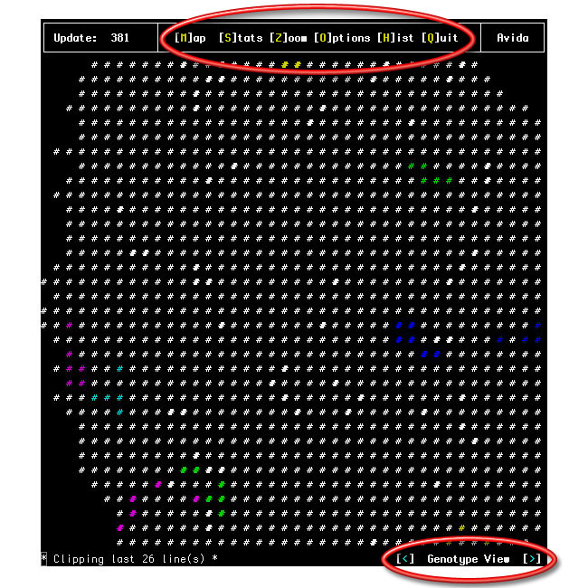
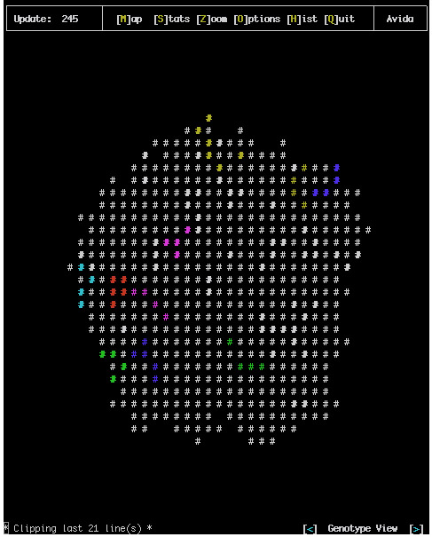
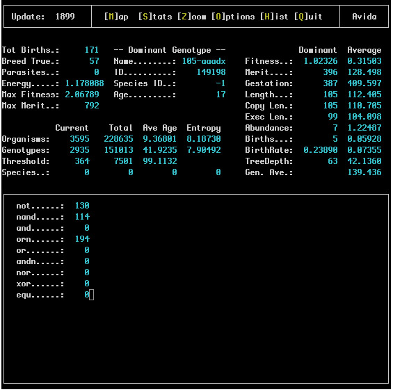
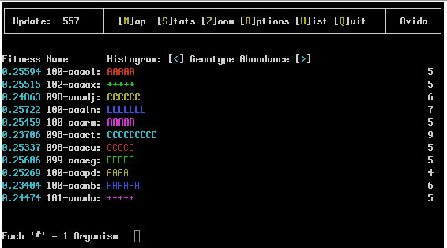
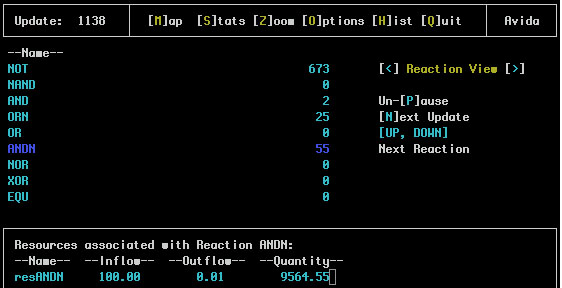
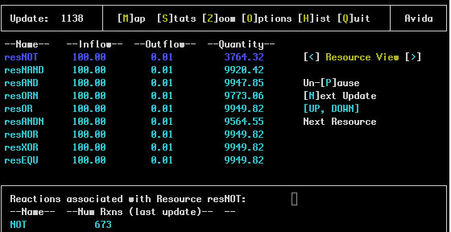
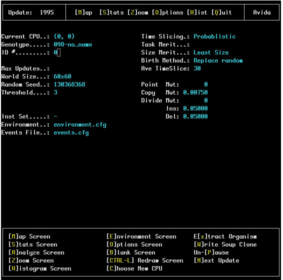
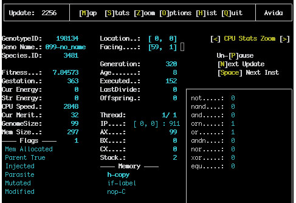
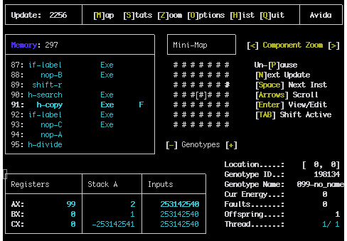
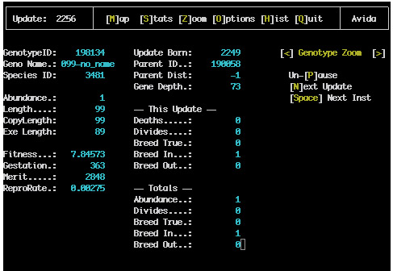

The viewer has a number of one character commands that can be typed while the program is running. Often the most common commands are shown on the screen between square brackets (for example [Q]). A list of the most common commands:
Available key strokes are shown on the screen (note that the number of keys at the top screen will vary based on the width of the screen):

Draft Documentation based on: "Avida User's Manual" C. Ofria, C.T. Brown, and C. Adami in Introduction to Artificial Life by C. Adami:
For the most part the text interface to avida is simple and straightforward to use; most of the options available are listed on the screen For example at all times there is a menu bar at the top of the screen which lists the current update and the keys to press to go to any of the most used avida screens This section further defines the function of each of these options.
The Map screen displays the spatial representation of the population of organisms in avida The grid itself is toroidal and typically will not fit entirely on the screen The arrow keys will allow the users to adjust the portion of the map viewed On computers using a "curses" interface the arrow keys will often not function properly in which case the number keys 8, 2, 4 and 6 can be used to move up, down, left and right respectively Here is an example map screen (showing genotype view on a color terminal):

Many different features can be displayed by the different map views (which can be cycled through using the '<' and '>' keys) The available map viewing styles are:
Genotype view: This view of of the soup will display the genotype at each location The most abundant genotypes each have a unique color (or letter if colors are not available) assigned to them; all sites which are of the same color (or letter) harbor the same genotype organisms which have passed the genotype threshold but are not abundant enough to have a color of their own are represented by white (or a '+') on the map Sub threshold genotypes are denoted by gray (or a '.')
Species view: This viewing method is only available when speciation has been turned on. It works in a manner very similar to the genotype view except single colors (or letters) are assigned to entire species. Additional species (those which are less abundant) are denoted by the color white (or marked by a *) ) Species view tends to be much "cleaner" than genotype view for observing the current dynamics taking place
Breed True view: This view simply displays a binary gray or white (- or * if no colors) indicating whether a program at that grid point is an exact copy of its mother. White (or a *) stands for a true breeding program.
Parasite view: This view works identically to Breed True with white (or *) indicating organisms which are parasites.
Mutation view: Again this view works like Breed True where white (or *) marks those organisms that have been hit by mutations.
Thread view: This shows the number of the thread.
Modified view:
Lineage view: This view works in a manner very similar to the genotype view except single colors (or letters) are assigned to the decedents of particular ancestors.
This screen displays all of the current statistics about the ongoing run A typical snapshot of the screen looks like this:

Starting at the upper left column of the screen the first block of statistics describes the current state of the soup. These statistics are defined as follows:
To the right of the soup status column we have some information about the dominant genotype This section simply lists the name of this genotype its ID its species ID and its age (how many updates it has existed for) The first three of these statistics are purely for identification purposes.
On the right side of the screen more statistics are given for a number of common measurements on the dominant genotype as well as the average across all genotypes.
In the middle left side of the screen we have information about the various taxonomic levels in avida; we give the current abundance of each in the Current column the total number of each that have existed over the entire run in the Total column the average number of updates each have existed in the Ave Age column and finally the entropy of each in the Entropy column.
Finally along the bottom of this screen we list the total number of organisms which have completed each of the assortment of tasks available in avida These numbers reflect only those organisms which have actually finished the task so even if every organism in the soup is capable of completing a task not all of them may be listed because the newborns would not have finished it for the first time.
This screen is a histogram of the most abundant genotypes or species (use '<' or '>' to toggle between them) in the population. A typical screen where species are not being tracked looks like this:
The first number here represents the fitness of the organism; this is the relative replication rate as compared to the other organisms in the population.
Next comes the name of the genotype (For example 096-aaacf) This is an identifier for the genotype and the name of the file it will be saved under if it is extracted The number portion (before the dash) of the name is the length of the code for that genotype and the letter sequence after the dash gives a unique identifier for it These are never repeated throughout a single run.
The repeated '#' after the name is the actual histogram; the number of characters which appear here is the relative current abundance of the genotype This allows quick recognition of which genotypes are dominant in the soup.
Finally each line ends with a number which is the exact abundance of organisms currently within this genotype.
If species information is being recorded (i.e. the SPECIES_RECORDING flag in the avida.cfg file is set to 1 or 2) the Genotype Abundance and Species Abundance Views might look like:
Notice that the '#' have been replaced with letters that represent the species of this genotype so any two lines with the same letter are of the same species.

This screen shows reactions and resources that are defined in the environment.cfg file. An example of the Reaction View:

One the left side of the main screen is a list of all the defined reactions. To the right is the number of organisms that have completed this reaction. Using the up and down arrow keys one of the reactions is highlighted. If there are any resources associated with the selected reaction they are displayed in the bottom pane.
The Resource View is similar:

In this case the resource names are shown with the inflow amount, outflow rate and total quantity of that resource in the environment. The reaction(s) associated with this resource are shown in the bottom pane.
This screen lists all of the options which are both currently available and were used to initialize this run. A typical screen looks like:

The upper left corner of this screen gives information about the active genotype in the soup and the remainder of the upper portions of the screen list values from the avida.cfg file and what they were initialized to.
The lower part of the screen (within a box) shows the special options available to the user They are:
[H]istogram Screen: This will go to the histogram screen described above.
[B]lank Screen: This option will clear the screen making avida run marginally faster (since it will not be wasting much CPU time on the display).
[R]edraw Screen: If the screen gets garbled this will erase it and refresh all text which is supposed to appear.
[C]hoose New CPU: This option will put avida in map screen with the cursor on the screen Position the cursor over the CPU you would like to select and press enter Additionally in the Windows version of avida the mouse can be used to select CPUs while in this screen. A single click highlights the CPU targeted and a double click selects it as the new active CPU and exits from this screen The selected CPUs inner workings and genome can then be viewed in the Zoom screen (see below).
[E]xtract organism: This will save the genotype of the active organism (the one currently selected) to a file by the same name as the genotype An extracted organism will include all of its statistics as comments (gestation time fitness tasks completed etc) and can be loaded into another soup without modifying the file.
[P]ause: Freezes activity in the soup but still allows navigation through the interface and examination of the soup Additionally many screens have additional options when the soup is paused.
[N]ext Update: When paused this will advance the soup a single update.
This screen contains all of the information about the state of the active CPU has three views (CPU Stats Zoom, Component Zoom and Genotype Zoom). This screen is especially useful while avida is paused The space bar will cause the active organism to advance a single instruction and the return key will cause it to advance a full update In this way the execution of the organism can be fully examined.
Here is a typical screen shot:

The column on the left of the screen gives all of the current statistics for this CPU and the right of the screen contains information about the actual hardware in the CPU; the memory the stack the registers and the I/O buffers The execution statistics recorded here are:

This view consists of a number of panes that can be accessed by using the TAB key.
The top left pane shows the genome of the current organism. The number at the top box shows how many instructions are in the memory. The bottom box shows the individual instructions, if they are executate or were copied, and the location of the flow, write and read heads. Instructions can be edited here as well.
The top middle pane shows a miniature version of the map view around the current organism.
The bottom left pane shows the content of the registers, the Stack and the input values used by the organism.
The bottom right pane shows general information atou the organism
